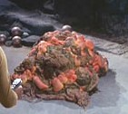

Horta |
|
||||
|  |
Forma di vita a base di silicio originaria di
Janus VI. Il suo ambiente naturale è il sottosuolo e per muoversi attraverso
la roccia solida, secerne un potente acido corrosivo. Ogni 50.000 anni tutti i
membri di questa specie cessano di vivere, ad eccezione di uno, che ha il compito di prendersi
cura delle uova deposte. Questo individuo diviene la madre della razza. Il primo
contatto con questa specie avviene nel
2267.